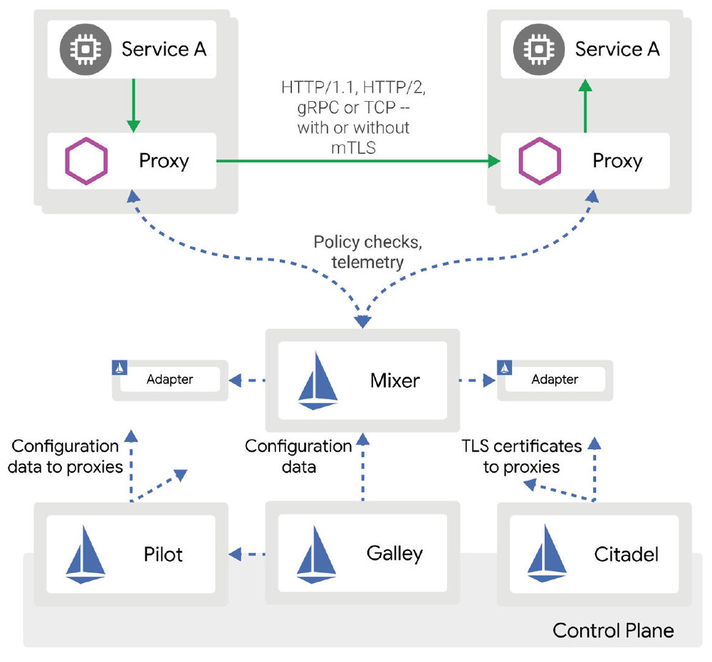
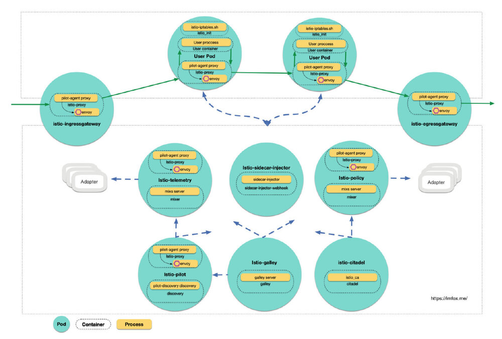

作者: 钟华，腾讯云容器团队高级工程师，热衷于容器、微服务、service mesh、istio、devops 等领域技术。
Istio 作为 Service Mesh 领域的集大成者, 提供了流控, 安全, 遥测等模型, 其功能复杂, 模块众多, 有较高的学习和使用门槛, 本文会对istio 1.1 的各组件进行分析, 希望能帮助读者了解istio各组件的职责、以及相互的协作关系.
1. istio 组件构成
以下是istio 1.1 官方架构图:

虽然Istio 支持多个平台, 但将其与 Kubernetes 结合使用，其优势会更大, Istio 对Kubernetes 平台支持也是最完善的, 本文将基于Istio + Kubernetes 进行展开.
如果安装了grafana, prometheus, kiali, jaeger等组件的情况下, 一个完整的控制面组件包括以下pod:
% kubectl -n istio-system get pod
NAME READY STATUS
grafana-5f54556df5-s4xr4 1/1 Running
istio-citadel-775c6cfd6b-8h5gt 1/1 Running
istio-galley-675d75c954-kjcsg 1/1 Running
istio-ingressgateway-6f7b477cdd-d8zpv 1/1 Running
istio-pilot-7dfdb48fd8-92xgt 2/2 Running
istio-policy-544967d75b-p6qkk 2/2 Running
istio-sidecar-injector-5f7894f54f-w7f9v 1/1 Running
istio-telemetry-777876dc5d-msclx 2/2 Running
istio-tracing-5fbc94c494-558fp 1/1 Running
kiali-7c6f4c9874-vzb4t 1/1 Running
prometheus-66b7689b97-w9glt 1/1 Running
将istio系统组件细化到进程级别, 大概是这个样子:

{kind=link}
Service Mesh 的Sidecar 模式要求对数据面的用户Pod进行代理的注入, 注入的代理容器会去处理服务治理领域的各种「脏活累活」, 使得用户容器可以专心处理业务逻辑.
从上图可以看出, Istio 控制面本身就是一个复杂的微服务系统, 该系统包含多个组件Pod, 每个组件 各司其职, 既有单容器Pod, 也有多容器Pod, 既有单进程容器, 也有多进程容器, 每个组件会调用不同的命令, 各组件之间会通过RPC进行写作, 共同完成对数据面用户服务的管控.
2. Istio 源码, 镜像和命令
Istio 项目代码主要由以下2个git 仓库组成:
| 仓库地址 | 语言 | 模块 |
|---|---|---|
| https://github.com/istio/istio | Go | 包含istio控制面的大部分组件: pilot, mixer, citadel, galley, sidecar-injector等, |
| https://github.com/istio/proxy | C++ | 包含 istio 使用的边车代理, 这个边车代理包含envoy和mixer client两块功能 |
2.1 istio/istio
https://github.com/istio/istio 包含的主要的镜像和命令:
| 容器名 | 镜像名 | 启动命令 | 源码入口 |
|---|---|---|---|
| Istio_init | istio/proxy_init | istio-iptables.sh | istio/tools/deb/istio-iptables.sh |
| istio-proxy | istio/proxyv2 | pilot-agent | istio/pilot/cmd/pilot-agent |
| sidecar-injector-webhook | istio/sidecar_injector | sidecar-injector | istio/pilot/cmd/sidecar-injector |
| discovery | istio/pilot | pilot-discovery | istio/pilot/cmd/pilot-discovery |
| galley | istio/galley | galley | istio/galley/cmd/galley |
| mixer | istio/mixer | mixs | istio/mixer/cmd/mixs |
| citadel | istio/citadel | istio_ca | istio/security/cmd/istio_ca |
另外还有2个命令不在上图中使用:
| 命令 | 源码入口 | 作用 |
|---|---|---|
| mixc | istio/mixer/cmd/mixc | 用于和Mixer server 交互的客户端 |
| node_agent | istio/security/cmd/node_agent | 用于node上安装安全代理, 这在Mesh Expansion特性中会用到, 即k8s和vm打通. |
2.2 istio/proxy
https://github.com/istio/proxy 该项目本身不会产出镜像, 它可以编译出一个name = "Envoy"的二进制程序, 该二进制程序会被ADD到istio的边车容器镜像istio/proxyv2中.
istio proxy 项目使用的编译方式是Google出品的bazel, bazel可以直接在编译中引入第三方库，加载第三方源码.
这个项目包含了对Envoy源码的引用，还在此基础上进行了扩展，这些扩展是通过Envoy filter（过滤器）的形式来提供，这样做的目的是让边车代理将策略执行决策委托给Mixer，因此可以理解istio proxy 这个项目有2大功能模块:
- Envoy: 使用到Envoy的全部功能
- mixer client: 测量和遥测相关的客户端实现, 基于Envoy做扩展，通过RPC和Mixer server 进行交互, 实现策略管控和遥测
后续我将对以上各个模块、命令以及它们之间的协作进行探究.
3. Istio Pod 概述
3.1 数据面用户Pod
数据面用户Pod注入的内容包括:
-
initContainer
istio-init: 通过配置iptables来劫持Pod中的流量, 转发给envoy -
sidecar container
istio-proxy: 包含2个进程, 父进程pliot-agent 初始化并管控envoy, 子进程envoy除了包含原生envoy的功能外, 还加入了mixer client的逻辑.主要端口:
--statusPortstatus server 端口, 默认为0, 表示不启动, istio启动时通常传递为15020--proxyAdminPort代理管理端口, 默认 15000
注意以上参数虽然是启动时传递给父进程
pliot-agent, 但实际上监听以上端口的进程是子进程envoy.
3.2 istio-sidecar-injector
包含一个单容器, sidecar-injector-webhook: 启动一个http server, 接受kube api server 的Admission Webhook 请求, 对用户pod进行sidecar注入.
进程为sidecar-injector, 主要监听端口:
--portWebhook服务端口, 默认443, 通过k8s serviceistio-sidecar-injector对外提供服务。
3.3 istio-galley
包含一个单容器 galley: 提供 istio 中的配置管理服务, 验证Istio的CRD 资源的合法性.
进程为galley server ......, 主要监听端口:
--server-addressgalley gRPC 地址, 默认是tcp://0.0.0.0:9901--validation-porthttps端口, 提供验证crd合法性服务的端口, 默认443.--monitoringPorthttp 端口, self-monitoring 端口, 默认 15014
以上端口通过k8s serviceistio-galley对外提供服务。
3.4 istio-pilot
pilot组件核心Pod, 对接平台适配层, 抽象服务注册信息、流量控制模型等, 封装统一的 API，供 Envoy 调用获取.
包含以下容器:
-
sidecar container
istio-proxy -
container
discovery: 进程为pilot-discovery discovery ......主要监听端口:
- 15010: 通过grpc 提供的 xds 获取接口
- 15011: 通过https 提供的 xds 获取接口
- 8080: 通过http 提供的 xds 获取接口, 兼容v1版本, 另外 http readiness 探针
/ready也在该端口 --monitoringPorthttp self-monitoring 端口, 默认 15014
以上端口通过k8s service
istio-pilot对外提供服务
3.5 istio-telemetry 和istio-policy
mixer 组件包含2个pod, istio-telemetry 和 istio-policy, istio-telemetry负责遥测功能, istio-policy 负责策略控制, 它们分别包含2个容器:
-
sidecar container
istio-proxy -
mixer: 进程为mixs server ……主要监听端口:
- 9091: grpc-mixer
- 15004: grpc-mixer-mtls
--monitoring-port: http self-monitoring 端口, 默认 15014, liveness 探针/version
3.7 istio-citadel
负责安全和证书管理的Pod, 包含一个单容器 citadel
启动命令/usr/local/bin/istio_ca --self-signed-ca ...... 主要监听端口:
--grpc-portcitadel grpc 端口, 默认8060--monitoring-port: http self-monitoring 端口, 默认 15014, liveness 探针/version
以上端口通过k8s serviceistio-citadel对外提供服务。
后续将对各组件逐一进行分析。